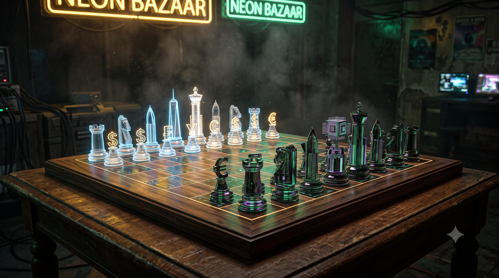

Módulo 02: O Plano do BIS
O Tabuleiro de Basileia / Unified Ledger (Ep. 02)

Por que esta aula importa para a sua jornada na Pós-Graduação?
Esta aula estuda a estratégia global do BIS (Bank for International Settlements - o "banco central dos bancos centrais") de unificação monetária e patrimonial. Compreender o funcionamento do Unified Ledger e a tokenização de RWAs (Real World Assets - Ativos do Mundo Real) é vital para identificar novos polos de liquidez e planejar arquiteturas seguras de custódia corporativa.
O que você precisa saber antes de continuar:
- Dinheiro Soberano vs. Depósitos Tokenizados: A diferença entre o dinheiro emitido pelo Banco Central e os saldos digitais sob custódia de bancos comerciais privados.
- Liquidação Atômica: A transação em que a transferência de propriedade e o pagamento financeiro ocorrem de forma instantânea e simultânea, eliminando riscos de calote.
Imagine que você queira comprar uma casa. No sistema tradicional, você precisa transferir fundos de um banco para outro, ir ao cartório de registro de imóveis, obter assinaturas, recolher impostos municipais e aguardar dias até que o cartório confirme que o imóvel de fato agora é seu. Há uma separação física e temporal absoluta entre o registro da propriedade e a liquidação financeira.
Na Suíça, mais especificamente nas mesas de discussão do BIS (Bank for International Settlements — o "Banco Central dos Bancos Centrais" sediado em Basileia), essa divisão é vista como uma ineficiência perigosa. O plano diretor deles para o futuro das finanças mundiais visa a unificação total dessas engrenagens sob o conceito de Unified Ledger (Livro Razão Unificado). A meta deles é simples: colocar a sua conta bancária e as escrituras dos seus bens no mesmo tabuleiro digital.
Para a maioria das pessoas, isso soa apenas como uma modernização técnica bem-vinda de sistemas bancários lentos. Mas a verdadeira pergunta que o gestor de patrimônio maduro deve fazer não é sobre a velocidade da liquidação, mas: por que as instituições de Basileia têm tanta urgência em criar um tabuleiro único e o que elas pretendem fazer uma vez que todo o dinheiro e os ativos estejam sob o mesmo banco de dados?
Tese — O Tabuleiro Único
O BIS percebeu que as criptomoedas descentralizadas (como o Bitcoin) provaram a viabilidade de mover ativos sem intermediários, mas falharam como moedas de confiança por falta de âncora estatal. A solução de Basileia foi copiar a tecnologia blockchain (Distributed Ledger Technology), mantendo o controle estritamente centralizado nas mãos dos Bancos Centrais.
No Unified Ledger, o BIS coloca três pilares rodando na mesma infraestrutura programável:
A cooperação para testar essa interoperabilidade transfronteiriça já está em andamento sob a governança do Project Agorá (Projeto Ágora):
Antítese — As Desconfianças do Smart Money
Se o blueprint técnico parece perfeito nos relatórios suíços, o chamado Smart Money — os megainvestidores institucionais e fundos de investimento privados — está olhando para esse tabuleiro com o pé atrás por motivos muito específicos:
1. Botão de Desliga
O investidor teme a perda de autonomia sob chaves de programabilidade que permitem ao Banco Central aplicar expirações ou bloqueios unilaterais e instantâneos em saldos sem direito prévio de defesa.
2. Fraudes Cripto
A associação das CBDCs com os históricos escândalos de corretoras de varejo (FTX) cria repulsa. Há um receio latente sobre a real blindagem lógica das carteiras contra vazamentos ou invasões.
3. Liquidez de Transição
A velocidade de saída é prioritária. Enquanto os trilhos do Drex não estiverem 100% integrados às contas de varejo, revender tokens de propriedades físicas de forma imediata é um gargalo operacional.
Síntese — A Brecha Estratégica
Esse distanciamento do investidor tradicional é a maior assimetria de oportunidade para o empresário inovador. Se o mercado estivesse inundado e confiante, as margens seriam insignificantes. O receio geral cria um "oceano azul". Quem aprender a mapear esses riscos e entender as chaves desse tabuleiro construirá as pontas que o sistema inevitavelmente precisará.
O que você deve levar deste episódio:
- O BIS visa centralizar moedas digitais (CBDCs) e registros de ativos físicos no mesmo livro razão (Unified Ledger).
- A hesitação do grande capital deve-se aos medos de intervenções algorítmicas, brechas de segurança de rede e baixa liquidez imediata.
- A lentidão das instituições em entrar cria uma assimetria lucrativa para quem construir ferramentas de lastro e conformidade nas pontas.
CBDC (Central Bank Digital Currency / Drex)
Moeda digital emitida por Bancos Centrais. Funciona como um Pix com garantia de entrega: dinheiro inteligente programado para só ser transferido se a outra parte cumprir o acordo (ex: entregar o carro ou registrar o imóvel).
RWA (Real-World Assets) / Tokenização
Ativos do Mundo Real. O processo de transformar propriedades físicas (imóveis, veículos, safras, contratos) em frações digitais únicas criptografadas que não podem ser clonadas ou roubadas.
Smart Contracts
Contratos autoexecutáveis. Protocolos lógicos na blockchain que realizam transações de forma automática quando as condições combinadas são atingidas, dispensando intermediários (ex.: uma máquina de refrigerante automática).
Unified Ledger
Livro Razão Unificado (O Tabuleiro Único). Um ambiente digital comum onde dinheiro oficial e registros de propriedades são atualizados de forma síncrona e integrada, em vez de usar sistemas separados de bancos e cartórios.
ZKP (Zero-Knowledge Proofs)
Provas de Conhecimento Zero (A Máscara Matemática). Protocolos criptográficos que permitem provar que uma informação ou saldo é verdadeiro e válido sem a necessidade de revelar os dados confidenciais na rede.
🧠 Pergunta-Guia de Reflexão para a Aula:
"Se o plano de unificação do BIS centraliza a custódia de escrituras e do dinheiro soberano sob o mesmo ledger, de que forma as empresas podem desenhar travas de redundância contratual para evitar que mudanças unilaterais nas regras da rede confisquem ou paralisem sua liquidez?"